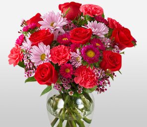

Scents
-

Strawberry Scent
Strawberry is a fruit of Fragaria, a lovely genus of plants tightly related to the rose family. The best known example of this kind is the Garden Strawbery, botanically known as fragaria ananassa, the most commonly grown among more than 20 cultivated species. This red and juicy, sweet-acidulous fruit has a distinctive smell of fruity-green and a bit even caramel, with sublime flowery and spicy nuances. The fruit forms from the soft white flowers with crown petals, from which the plentitude of strawberries develop..
>>> Learn More -

Lemon Scent
The fragrant essential oil of lemon is produced by cold pressing the peel, and described as clean, fresh and sparkling. This fresh and cheerful aroma is widely used in colognes, perfumes and various body-care products, to create invigorating and sharp citrusy composition. Unlike other essential oils, lemon oil is usually cold pressed and therefore it has a fragrance that is similar to the fruit and its fresh ripe peel. This zesty scent blends well with floral notes of geranium, lavender, rose, and ylang ylang. It also builds a nice olfactory harmony in combination with citronella, lime, neroli, orange and sage.
>>> Learn More -

Apple Scent
This is a fun scent to add to any line - and it's sure to be popular with the kids! This scent is actually a blend of a few varieties of Red Apple scents, along with some notes of Green Apple to temper the sweetness. The Green Apple notes add some wonderful depth and tartness to the scent.
>>> Learn More -

Flower Scent
One of the most valuable elements of a fine perfume is provided by the rose, known as the "queen of flowers". Rose perfumes were very popular with the Romans and the Greeks. Rose flowers are gathered at night since they carry fragrance before sunrise.
>>> Learn More